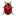

Wiki
Mitmachen
- Wikiartikel anlegen
- Howto anlegen
- Wiki-Referenz
- Wiki-Syntax
- Baustellen
- Artikelideen
- Ungetestete Artikel
- Ausbaufähige Artikel
- Fehlerhafte Artikel
- Rund ums Wiki
Konfiguration
- Backlinks anzeigen
- Exportieren
IM
Die Vorlage IM basiert auf der Vorlage Projekte und ist in der Handhabung ähnlich. Verwendet wird sie für Übersichten zu Programmen, die bestimmte Dienste unterstützen und weitere Merkmale mit verschiedenen Eigenschaften haben.
Folgender Artikel verwendet die Vorlage:
Neuer Eintrag¶
Öffnet man die Seiten zum Editieren, findet man die vorhandenen Einträge innerhalb der Vorlagen. Ein Eintrag besteht aus fünf Zeilen und wird nach oben mit drei Pluszeichen +++ abgegrenzt:
{{{#!vorlage IM, "Überschrift"
+++
Icon
Artikel
Beschreibung
Protokolle
Merkmal ja/nein/...
}}}Icon - das Icon muss ein 32x32 Pixel großes png-Bild sein, in der Vorlage wird nur der Name des Icon ohne Dateiendung angegeben. Gibt es kein Icon, bleibt die Zeile leer.
Artikel - der Artikel ist in der Regel der Name des Programms
Beschreibung - eine kurze Beschreibung ohne weitere Links, denn diese mindern die Übersichtlichkeit enorm.
Protokolle - Komma-separierte Liste unterstützter Protokolle/Dienste
Merkmal ja/nein - in dieser Zeile werden weitere Merkmale mit einem Status (Kurztext) angegeben. Folgende Möglichkeiten gibt es dabei:
| Status-Icons der Merkmale | ||
| Icon | Kurztext | Beschreibung |
ja | Voll unterstützt | |
nein | Nicht unterstützt | |
bedingt | Bedingt unterstützt | |
alpha | In Entwicklung | |
|  | buggy | Fehlerhaft |
manuell | Manuell installierbar | |
plugin | Plugin | |
unbekannt | Status unbekannt | |
Im Rohformat des Wiki sieht das beispielhaft so aus:
{{{#!vorlage IM, "Ein Beispiel ohne Icon"
+++
Finch
Finch ist die Konsolenvariante von Pidgin. Wer Pidgin verwendet und einen Instant Messenger für das Terminal sucht, kann Finch benutzen, da Finch auf die selben Einstellungen wie Pidgin zugreift.
aim, bonjour, gadu-gadu, novell, icq, irc, msn, mxit, myspace, qq, silc, simple, sametime, skype, twitter, xmpp, yahoo, zephyr
In den Quellen ja, SSL/TLS ja, OTR plugin, OpenPGP unbekannt, Dateiversand ja, Ignorierliste ja, Audiochat nein, Videochat nein, Metakontakte ja
}}}Und so sieht das Ergebnis aus:
| Ein Beispiel ohne Icon | |
| Programm | Beschreibung |
| Finch | Finch ist die Konsolenvariante von Pidgin. Wer Pidgin verwendet und einen Instant Messenger für das Terminal sucht, kann Finch benutzen, da Finch auf die selben Einstellungen wie Pidgin zugreift. |
Neues Protokoll¶
Wird ein Protokoll eingetragen, das der Vorlage nicht bekannt ist, wird nur der eingetragene Text dargestellt. Das Protokoll muss vom Wikiteam in der Vorlage eingetragen werden und das 24x24 Pixel große Icon als Anhang von Wiki/Icons/Protokolle hinterlegt werden.
Diese Revision wurde am 10. Juli 2011 16:25 von cornix erstellt.
- Erstellt mit Inyoka
-
 2004 – 2017 ubuntuusers.de • Einige Rechte vorbehalten
2004 – 2017 ubuntuusers.de • Einige Rechte vorbehalten
Lizenz • Kontakt • Datenschutz • Impressum • Serverstatus -
Serverhousing gespendet von